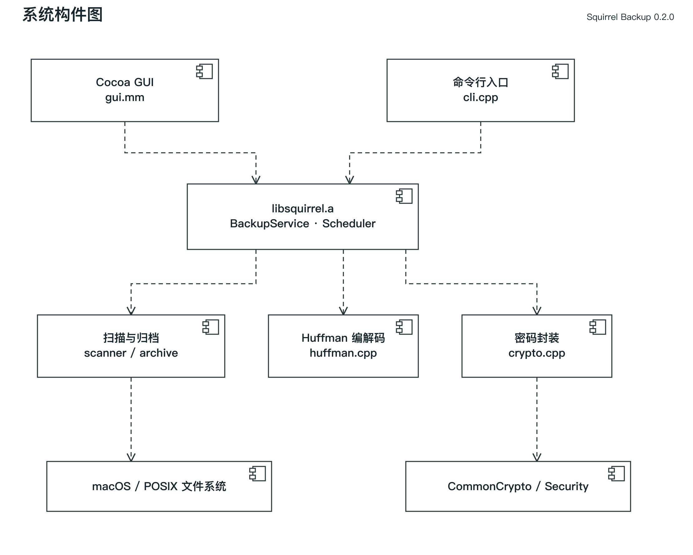
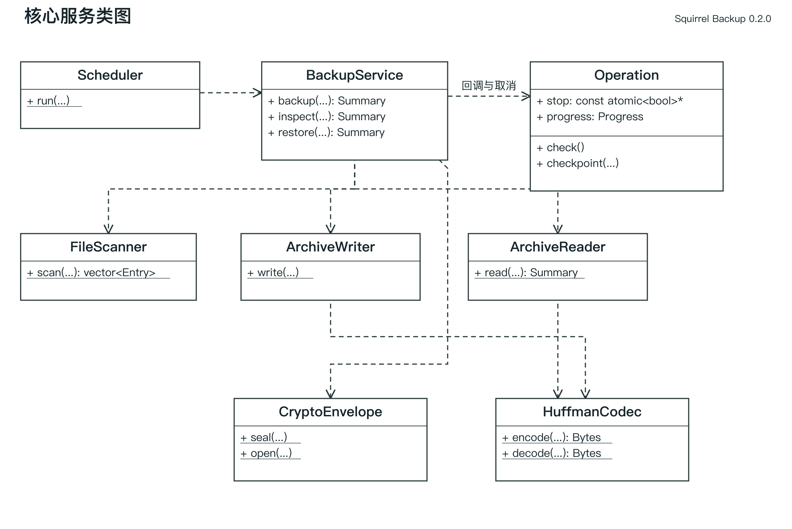
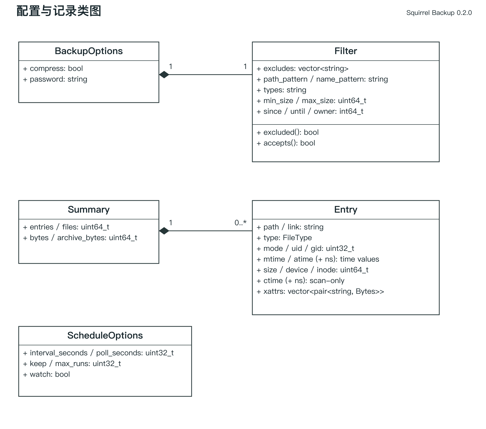
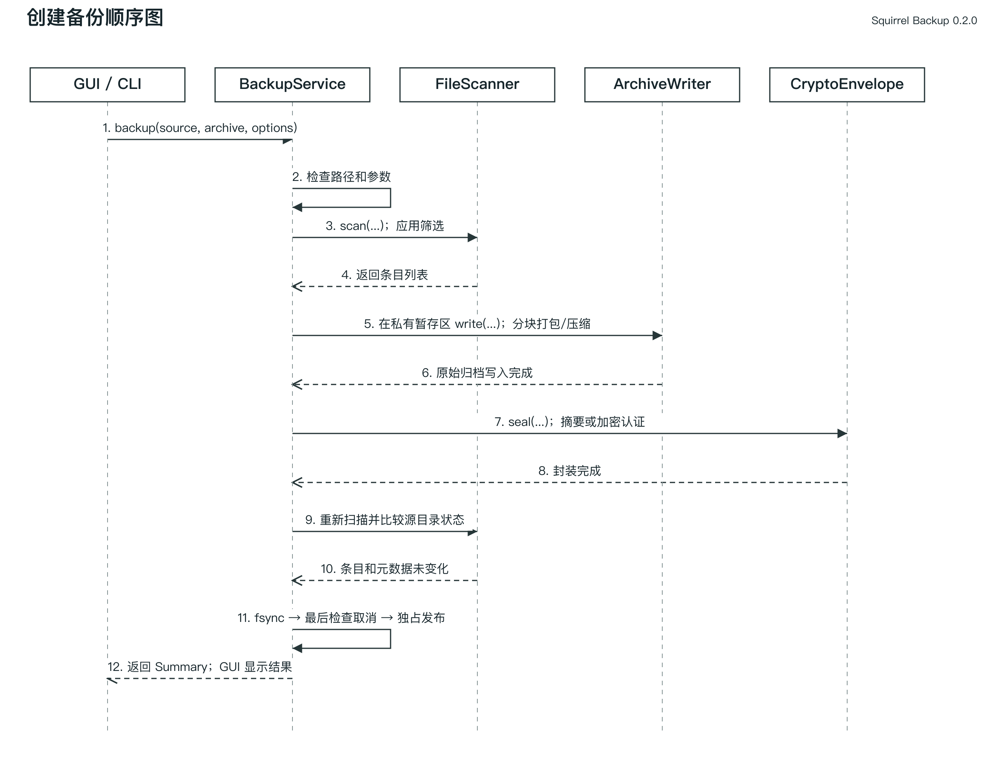
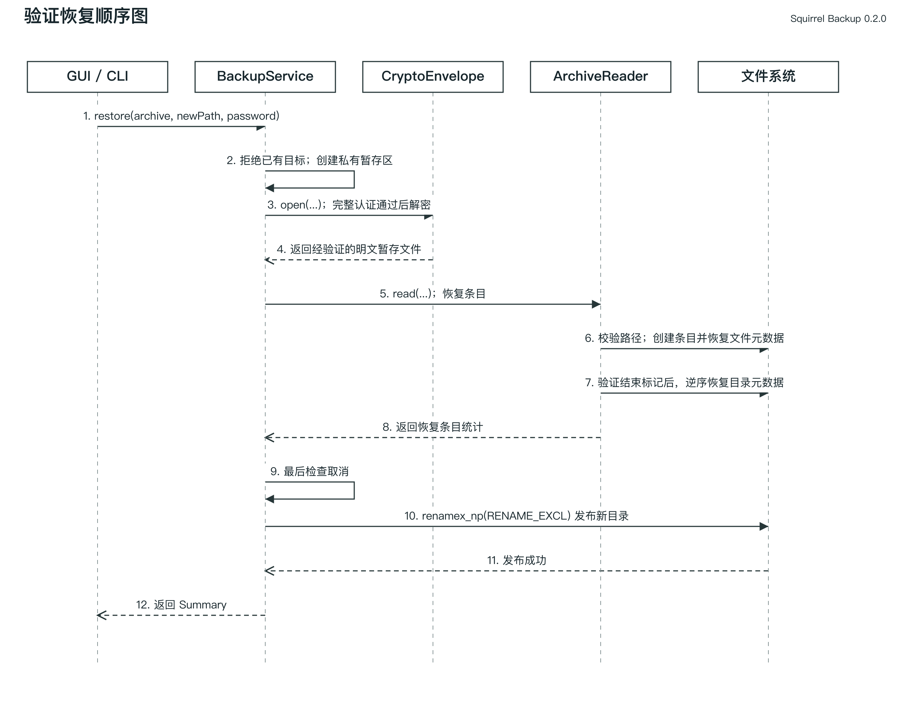
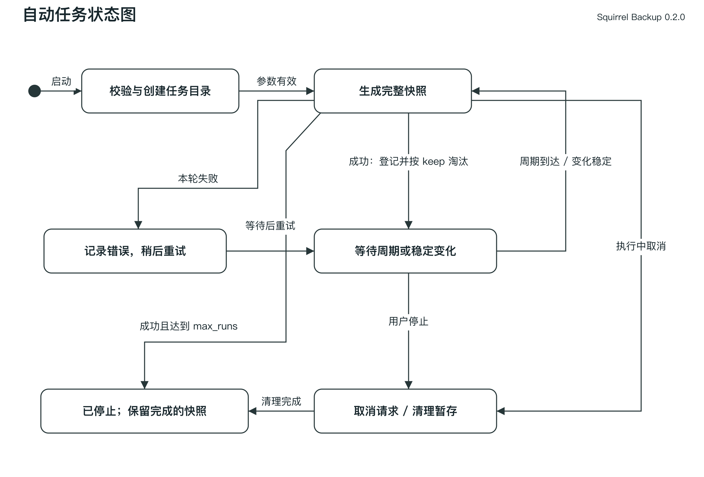

松鼠备份系统设计文档
版本 0.2.0。本设计对应需求 FR-01 至 FR-24，说明已实现的 C++ 类、文件协议、恢复安全边界和调度逻辑。文档中的方法名以 include/squirrel/backup.h 为准；对应的可编辑UML模型及插图位于docs/uml。
1 开发环境和工具
1.1 开发环境
本轮构建宿主为 macOS 13.0 arm64、Apple Clang 14.0.3与系统SDK；0.2.0部署目标为macOS 13.0。使用C++17、Objective-C++、make与git。原0.1.0开发环境记录保留在历史材料，不替代本轮环境。通过 -Wall -Wextra -Wpedantic -Werror 编译业务源码；CommonCrypto 的系统废弃声明告警单独屏蔽，不视为算法自研。GoogleTest 执行白盒测试；Python 驱动 CLI 黑盒和性能测试；AddressSanitizer 与 UndefinedBehaviorSanitizer 用于动态检查，适配本机平台而不强行安装 Linux 的 perf 或 valgrind。
1.2 依赖库
GUI 使用 Cocoa/AppKit，密码封装使用 CommonCrypto/Security。打包、Huffman、筛选和调度由本项目编写。GoogleTest 只链接测试程序。详细来源、许可和扩展功能计分说明见 THIRD_PARTY.md。
2 总体设计
2.1 系统结构设计
入口层由 cli.cpp 和 gui.mm 构成。CLI 解析参数、读取密码环境变量并处理退出码；GUI 收集输入，在后台队列调用业务服务，在主队列更新日志。业务层由 BackupService 统一编排，Scheduler 提供循环快照。基础模块分为 FileScanner、ArchiveWriter、ArchiveReader、HuffmanCodec 和 CryptoEnvelope。
构建时核心源文件生成 libsquirrel.a，GUI 和 CLI 静态链接同一核心。当前不提供对外稳定 C ABI 或动态库；若后续需要脚本 UI 或插件，才考虑增加不传播 C++ 异常的 C 接口。组件图需要展示两个入口对同一核心库的依赖及核心库对文件系统、密码库的依赖，模型中的构件依赖与本节一致。

备份子系统接收源目录和 BackupOptions，输出单个封装文件与 Summary。恢复子系统接收备份和新目标路径，验证后输出新树和统计。自动任务复用 BackupService，不单独复制打包逻辑。
3 静态建模
3.1 系统对象模型
核心类关系以静态工具方法依赖为主：BackupService 依赖 FileScanner、ArchiveWriter、ArchiveReader、CryptoEnvelope；ArchiveWriter 和 ArchiveReader 依赖 HuffmanCodec；Scheduler 依赖 BackupService、BackupOptions 与 ScheduleOptions。它们不通过继承形成多态层次，不应在类图中臆造父类。
值对象组合关系：BackupOptions 拥有 1 个 Filter、压缩开关和密码；Entry 拥有路径、链接、类型、权限、属主、时间、尺寸和 0.. 个 xattr 键值；Summary 拥有统计和 0.. 个 Entry（仅收集模式返回列表）。Filter 拥有 0..* 条排除规则。服务类本身不长期保存 UI 状态。GUI 控制器负责窗口及任务停止标志，异步操作期间保持控制器存活。


3.2 类及方法描述
| 类型 |
关键属性 |
方法与约束 |
验证依据 |
| Filter |
excludes、path/name_pattern、types、min/max_size、since/until、owner |
excluded(path) 剪枝；accepts(path,stat) 对非目录 AND 筛选 |
六类筛选测试 |
| Entry |
path、type、link、mode、uid/gid、时间、size、xattrs；扫描检测另含device/inode/ctime |
文件树记录，path相对根；device/inode/ctime仅在扫描内存中使用，不写入归档 |
元数据与类型测试 |
| BackupOptions |
filter、compress、password |
默认压缩；空密码表示未加密 |
原始／压缩／加密组合 |
| Summary |
entries、files、bytes、archive_bytes、items |
files 包含普通和硬链接，bytes 按逻辑文件尺寸累计 |
CLI 统计与 roundtrip |
| FileScanner |
无持久状态 |
scan(...) 返回 vector，失败抛异常 |
扫描和排除测试 |
| HuffmanCodec |
无持久状态 |
encode(Bytes)、decode(Bytes,expected)，最大输入块 1 MiB |
空、单符号、全符号、随机与畸形数据 |
| ArchiveWriter |
无持久状态 |
write(...) 安全打开源文件，按块写入归档 |
跨块大文件 |
| ArchiveReader |
无持久状态 |
read(...)；destination 为空时仅检查 |
恢复与恶意归档测试 |
| CryptoEnvelope |
无持久状态 |
seal(...) 封装；open(...) 认证并解封 |
错误密码、损坏、加密往返 |
| BackupService |
无持久状态 |
backup、inspect、restore，输出路径须不存在 |
不覆盖与路径限制测试 |
| ScheduleOptions |
interval_seconds、keep、poll_seconds、watch、max_runs |
时间和保留份数必须为正；max_runs=0 无限运行 |
调度测试 |
| Scheduler |
局部基线、候选指纹、快照队列 |
run(...,stop,log,progress)，串行快照 |
淘汰、监测、停止测试 |
| Operation |
stop、progress |
check()检查取消；checkpoint()通知阶段和进度后再次检查 |
各阶段取消回归 |
| ProgressInfo |
phase、completed、total、path |
数值单位随阶段区分为字节或条目，回调在工作线程执行 |
GUI进度与取消状态 |
完整签名见include/squirrel/backup.h。scan、write、read、seal、open以及BackupService的三个方法均接收可选Operation参数，使取消和进度贯穿一次操作。Scheduler接收停止标志与进度回调，在每次快照中构造Operation。
业务方法返回Summary统计；错误统一以squirrel::Error或标准文件系统异常传递。普通错误由CLI返回1，单次操作取消返回130，自动任务收到停止信号后正常返回0；GUI分别显示失败、取消或已停止。Log和Progress回调由工作线程调用，GUI负责切换到主线程更新控件。
内部 RAII 对象 Fd 在作用域结束关闭文件描述符；TempDir 创建 0700 临时目录，正常或异常退出时在不跟随符号链接的前提下临时恢复目录访问权限并清理；Cipher 释放 CCCryptorRef。这些是资源管理辅助类，不对外暴露。
3.3 扫描与文件类型
扫描对目录子项排序，保证相同目录状态下顺序稳定。lstat 避免把符号链接当目标文件展开，readlink 记录链接字符串。普通文件通过 device/inode 对识别硬链接：被选中的第一次出现保存数据，后续记录引用该路径。FIFO 只记录类型和元数据，不打开读取。遇到 socket 或设备节点直接报错。
路径与名字通配符通过 fnmatch 实现，不是正则表达式。规则不跟随符号链接。全量 Entry 列表在内存保存，因此内存复杂度为 O(条目及扩展属性总量)，文件内容处理额外为 O(1 MiB)。
4 动态建模
4.1 场景一 创建备份
顺序为：入口收集参数，BackupService校验根目录和输出位置，FileScanner生成条目；创建私有暂存区，ArchiveWriter编写树记录并调用HuffmanCodec，CryptoEnvelope封装完整性或加密；重新扫描并比较选定源目录，fsync备份文件，最后检查取消，link独占发布输出，返回Summary。压缩发生在加密之前。
普通文件由 openSource 逐级 openat 并启用 O_NOFOLLOW 打开，避免父路径被替换为符号链接后跟随读取。0.2.0在打开后和内容读取后比对size、device/inode、mtime与ctime纳秒值；变化则失败。ctime只用于扫描与变化检测，不写入SQTREE01，归档版本和布局不变；这补强了同尺寸改写后恢复mtime的检测，但仍不提供多文件事务一致性。
发布前复查会比较条目数量、相对路径、类型、设备与inode、尺寸、权限、属主、mtime/ctime、链接目标和xattrs；atime不参与比较，避免读取引发误报。备份结束后的修改仍可能发生，因此这项检查不能代替文件系统快照。

4.2 场景二 验证与恢复
CryptoEnvelope 用一个 O_NOFOLLOW 文件描述符读取备份，先验证完整 payload 的摘要或 HMAC，再解密／复制至私有临时文件。第二遍读取再次计算摘要，检测两遍之间的内容变化。ArchiveReader 随后校验树并恢复至私有暂存目录。目录临时权限为 0700，普通文件以 O_EXCL/O_NOFOLLOW 和 0600 创建；链接父节点必须是已知目录，硬链接只能指向先前普通文件。
每个非目录条目创建后应用元数据，目录在全部内容处理后按逆序恢复。顺序为属主/组、扩展属性、权限、时间，避免前面的操作影响最终元数据；0.2.0把chmod和时间恢复失败作为错误，属主/xattr失败仍按原策略给出警告。读取完整结束标志并确认无尾随数据后，用 macOS renamex_np(RENAME_EXCL) 将暂存目录发布到新目标。失败不覆盖既有文件。

4.3 场景三 自动任务
Scheduler 创建本次专属 squirrel-job- 随机目录，生成 snapshot-1.sqbk 等完整快照。成功快照登记到 owned 队列，超过 keep 才删除最旧文件。新快照发布后立即更新计时与监测基线；淘汰失败只记录警告并在后续轮询重试，不重复生成快照或绕过 max_runs。非法密码和筛选配置在任务创建前拒绝。备份失败日志不触发淘汰。定时模式以单调时钟判断距上次完成的间隔；不补跑睡眠期间错过的周期。
实时模式每 poll_seconds 扫描一次，根据路径、类型、大小、device/inode、mtime、ctime、权限、UID/GID、链接目标和 xattrs 构造状态字符串，不包含 atime，避免备份读取触发自身循环。状态与基线不同且与上次候选相同才备份，即等待两个连续稳定观察。使用轮询并非 FSEvents 内核通知，实现简单但大目录扫描开销较高。
4.4 状态与线程
界面同一时间只运行一个业务操作，工作在线程池执行，所有AppKit更新切回主队列。执行期间禁用输入和新动作，导航仍可使用；切页不会抹掉完成或失败结果。进度通知按150 ms节流，显示扫描、打包、验证、元数据处理和发布等阶段。
Operation借用原子停止标志，扫描条目、1 MiB数据块、目录元数据处理和最终发布前均有取消检查。取消异常沿调用栈展开，由RAII清理暂存；最终发布已经成功时不再把操作改报为取消，也不删除完成结果。GUI关闭和退出同样请求取消，等待工作线程返回后关闭。
取消是协作式处理：一次文件系统调用、PBKDF2派生或单块Huffman计算仍需返回后才能响应。未提供固定毫秒级时限，也未使用强制线程终止。

图中“已停止”表示本次Scheduler调用结束，已经发布的快照保留。状态在内存中，不会在应用重启后自动恢复。达到max_runs的判断在本轮成功备份及淘汰之后进行。
5 数据持久化与文件格式
5.1 持久化选择
当前无数据库。备份自身存储元数据；任务运行时状态在内存，生成的备份留在独立目录。0.2.0 使用 NSUserDefaults 的 SquirrelBackup.FormSettings.v1 保存14项白名单表单字段：10项路径/筛选/间隔/保留文本，4项压缩/加密/实时开关。密码字段不进入偏好设置；预览和内部自测模式不读写真实用户设置。启动时按类型恢复表单，执行操作及正常关闭/退出时保存；不支持跨进程恢复运行中的调度计划，也不会因恢复开关而自动运行任务。
5.2 外层 SQBK 版本 1
所有多字节整数均小端，文本和二进制长度显式指定，禁止直接写入 C++ struct 的平台内存布局。外层头固定 44 字节：8 字节 ASCII SQBK0001，1 字节加密标志（0/1），3 字节保留零，16 字节 salt，16 字节 IV；其后为 payload，最后 32 字节为 tag。未加密时 salt/IV 为零，tag 是 header+payload 的 SHA256。加密时 tag 是 header+ciphertext 的 HMAC-SHA256。
PBKDF2-HMAC-SHA256 固定 200000 轮，派生 64 字节，前 32 字节为 AES-256 密钥，后 32 字节为 HMAC 密钥。salt 和 IV 分别由安全随机数生成，AES 使用 CBC 与 PKCS7 补齐。认证标签逐字节异或累计后判断，先验证后解密，不把密码摘要直接保存成可用于解密的密钥。密码最低 8 UTF-8 字节，并不代表强度保证；不存在找回机制。
5.3 内层 SQTREE 版本 1
开头为 8 字节 SQTREE01 和 8 字节条目数。每个条目依次为 type(u8)、path(长度 u32+字节)、mode/uid/gid(各 u32)、mtime 秒(i64)+纳秒(u32)、atime 秒(i64)+纳秒(u32)、size(u64)、link(长度文本)、xattr 数量(u32)，随后是各属性的名称和二进制值（均带长度）。根目录是第一条，path 为空。
Regular 条目后跟内容块，直到原始 size 被满足。每块包含编码标志(u8)、原始长度(u32)、存储长度(u32)、数据。编码 0 为原始块，1 为 Huffman。块原始长度 1..1048576；空文件没有内容块。Hardlink 保存首次 Regular 的路径和逻辑 size，没有重复数据。结束为 8 字节 SQEND001，之后不得有数据。
Huffman 块先记录 256 项 u32 频数表，再记录从高位起排列的比特。以优先队列按频数、节点索引确定合并顺序；相同频数可重建同一棵树。单符号块无需位流。编码长度不小于原始块时，写原始块，避免不可压缩数据膨胀。解码检查频数和、频数分布、位流长度及零填充，不允许尾随有效数据。
5.4 输入校验与资源约束
拒绝路径中的 NUL、绝对路径、空分量、点或父目录分量、重复条目、缺失父目录、非目录父节点、未知类型、非法权限和时间纳秒值。读取长度前设置文本、条目数、xattr 和块的上限。相对或绝对软链接目标可原样保留，但不能作为恢复其他记录的父路径；用户恢复后手动跟随链接可能访问源树外位置，应按普通文件系统链接理解。
6 风险与迭代
UID/GID 记录和异属主恢复分开处理，无权限只警告。xattrs 设置失败警告；ACL、出生时间、flags 不支持。原始块和加密中间数据会暂存磁盘，使用权限隔离而非安全擦除。强制中止可能留下 .squirrel- 前缀私有目录；不可自动删除不属于本次运行的路径。
备份发布前刷写单文件，但未实现所有恢复文件及父目录的 fsync 链，因此不承诺断电事务持久性。跨卷、跨平台和超大容量仍需实测。本轮变更的自动验证以03测试报告为准；仍需GUI真实点击、重启后参数记忆、密码为空及忙碌关闭/退出的交互验收。后续可评估可恢复调度状态、事件驱动监测和更完整元数据支持。